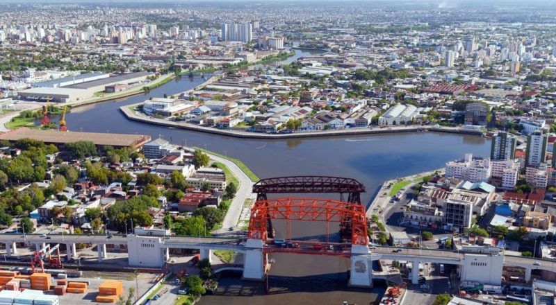

Buenos Aires se ubica en las orillas del Río de la Plata.
Se encuentra en la región pampeana o central de la Argentina, y la zona norte de la Provincia de Buenos Aires.
Su territorio metropolitano está delineado por la Av. General Paz, que la rodea, y por el propio río, del otro lado del cual se extiende el Uruguay.
Al sur, la ciudad delimita con el río Matanza-Riachuelo, que nace 64km adentro de la Provincia de Buenos Aires.
La ciudad se extiende sobre un terreno llano, a lo largo de 202 km2 de superficie. Tomando en cuenta el territorio de Gran Buenos Aires toda, esta cifra asciende a unos 3.885 km2 de superficie.
Buenos Aires fue fundada en dos ocasiones:
El 2 de febrero de 1536, por el español Pedro de Mendoza, con el nombre de Puerto de Nuestra Señora del Buen Ayre. Este asentamiento no duró demasiado, pues la hambruna y los conflictos con las poblaciones originarias querandíes llevó a su abandono en 1541. 11 de junio de 1580, por el Adelantado español Juan de Garay, quien venía de fundar Asunción en el Paraguay. Esta asentamiento se ubicó a una legua más al norte del sitio en donde Mendoza había hecho la primera fundación. La nueva ciudad se llamó Ciudad de la Trinidad en el Puerto de Santa María de los Buenos Aires, pero con el tiempo se impuso únicamente Buenos Aires. La ciudad era originalmente sede de una gobernación subordinada al Virreinato del Perú. En 1776 fue designada como capital del Virreinato del Río de la Plata, como parte de un plan para frenar el avance extranjero en la región y para controlar el contrabando de cuero.
Desde su fundación, Buenos Aires fue objeto de varios intentos de invasión. Entre ellos se destacan:
En 1587, por parte del inglés Thomas Cavendish. En 1658 por parte de Luis XIV de Francia. En 1806, en el marco de la Guerra anglo-española, cuando el inglés William Carr Beresford se hizo con el control de la ciudad, hasta ser derrotado por un ejército español procedente de Montevideo, al mando de Santiago de Liniers. En 1807, a cargo nuevamente de un inglés: John Whitelocke. Esta ciudad tuvo importancia central en los sucesos políticos del país. En 1816, fue segunda sede del Congreso de Tucumán. En ese encuentro, las provincias todas del Virreinato declararon su independencia de España. También se elaboró allí la Constitución de 1819.
En ese año se inició un convulso período de guerras intestinas y externas (como la Guerra del Brasil de 1824) que se extendió hasta ya obtenida la independencia. El punto culminante de estos enfrentamientos se dio en la guerra civil entre Unitarios y Federales. Buenos Aires fue bastión de los Unitarios, el bando perdedor.
La ciudad goza de un clima templado pampeano, o subtropical húmedo. Sus promedios anuales de temperatura son de 17,9 °C y de pluviosidad de 1236,3 mm. Sin embargo, la región cuenta con estaciones climáticas marcadas, con un verano caliente y húmedo, y un invierno frío y lluvioso.
Las temperaturas máximas veraniegas pueden superar los 40 °C, mientras que las mínimas invernales se mantienen próximas a los 7 °C. Estas temperaturas tienden a ser más extremas en el Gran Buenos Aires.
En la región porteña suelen darse tormentas de cierta intensidad. Esto se debe al empuje de dos vientos contrapuestos: los pampeanos y las sudestadas, viniendo el primero del sudoeste, y el segundo del sudeste.
El turismo en la ciudad es una importante fuente de ingresos y es posible hallar visitantes de distintas latitudes a lo largo del año, especialmente en las épocas veraniegas y primaverales. Se calcula que Buenos Aires recibe unos 5,5 millones de turistas por año, y la ciudad es uno de los 20 destinos preferidos del mundo.
Entre sus lugares turísticos más importantes están el casco histórico y la Casa Rosada (Casa de Gobierno), los barrios tradicionales de San Telmo y Monserrat, así como la Avenida de Mayo, La Boca (y especialmente Caminito), el lujoso Puerto Madero y el Cementerio de la Recoleta.
La cultura turística de Buenos Aires se nutre de la afición al Tango. Se trata de un baile típico tradicional heredero de la inmigración italiana, así como de otros ritmos típicos como la Milonga o la Chacarera. También es importante oferta musical de rock en español, especialmente entre los jóvenes.
Finalmente, la tradición literaria es también muy importante. Entre los autores más buscados por el turista se encuentran Jorge Luis Borges y Julio Cortázar.
El fútbol es el rey indiscutible del deporte en Buenos Aires. Exiten numerosos equipos barriales, de los cuales sobresalen en particular el Boca Juniors y el River Plate, eternos y conocidos rivales.
La celebración de este deporte permea todos los estratos sociales porteños. A menudo la competencia es fuente de conflicto entre los grupos que apoyan a uno u otro equipo.
Otros deportes practicados en Buenos Aires son el básquetbol, hockey sobre césped y el vóley.